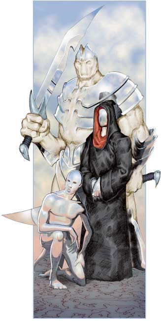

一些学者坚持认为，镜子仅仅反射光线这一普遍观点是错误的――事实上，它们允许观察者窥视一个与他们所知现实并存的真实位面。那个位面被称为镜影位面（Plane of Mirrors）。
镜影位面的统治者是一种被称为涅拉（nerras）的生物。天性神秘且反复无常，涅拉潜伏在镜影位面永恒的走廊中，通过凝视作为两个位面之间通道的无数镜子中的任何一面，来观察物质位面（Material Plane）的活动。
所有涅拉看起来都像正常的人形生物，但它们拥有完美如镜般光滑表面的皮肤。
涅拉偶尔会穿越位面边界，绑架物质位面上的个体。有理论认为它们正在策划入侵物质位面。有时涅拉会在各个位面游荡，收集情报并渗透各种组织。它们监控着形形色色人物的活动，这些人物通常（但不总是）是身处权力地位的个体。过一段时间后，它们会尝试捕获该个体并将其带入镜影位面。
涅拉会说通用语（Common）加上它们自己的语言。它们的语言并不特别悦耳，因为听起来像是岩石刮擦玻璃的声音。随着时间的推移，大多数涅拉会学会它们花最多时间观察的那个特定种族的语言。
涅拉是熟练且诡秘的战士，利用伏击和掩体来击败对手。它们偏爱潜伏在镜影位面，通过从镜子中跃出以突袭对手。如果涅拉计划绑架受害者，它会使用能捕获目标或造成淤伤（subdual damage）的武器和技巧。
当被杀死时，一个涅拉会粉碎为成千上万片镜子般的碎片。大约10分钟后，这些碎片会变成一滩水银（quicksilver），然后消失无踪。
镜跃 (Mirror Jump) (Su)：涅拉可以随意在镜面和反光表面之间移动。此效果类似于影行术（shadow walk），但涅拉是沿着镜影位面旅行。作为一个标准动作，涅拉必须接触一面镜子或其他高度反光的表面。然后该涅拉会从另一面不超过1英里远的镜子中出来。
如果涅拉接触一面普通的镜子，镜跃会自动发生。涅拉也可以接触一个高度反光的表面，例如抛光的金属盾牌或盔甲。此表面必须是清透的玻璃、一池静水或闪亮的金属。此表面有30%的几率足够反光以供涅拉进行镜跃。然而，当涅拉仅从非镜子的表面进入时――它只能通过普通的镜子返回。
如果另一面镜子不在镜跃的范围内，涅拉必须在镜影位面中游荡，并通过另一面随机的镜子传送门离开。
异界生物特性 (Outsider Traits)：涅拉拥有黑暗视觉（60 英尺范围）。它们不能被复活（raise）或复生（resurrection）（尽管祈愿术或神迹术可以恢复生命）。
反射法术抗力(Reflective Spell Resistance ) (Sp) : 涅拉拥有一种特殊类型的法术抗力，使其成功抵抗的任何目标性法术都会反弹并反射回施法者。施法者相应地成为该法术的目标或法术效果的源点。此外，涅拉对凝视攻击免疫，且此类效果会被反射回其源头。
碎片武器擅长 (Shard Weapon Specialty)：所有涅拉都获得一个奖励专长：异种武器擅长（Exotic Weapon Proficiency），专精于至少一种碎片武器。许多涅拉还会为一个或多个类型的碎片武器获得一个奖励专长：专攻武器（Weapon Focus）。
音波易伤(Sonic Vulnerability ) (Ex)：所有涅拉受到涉及音波能量的攻击时，无论是否允许豁免，以及豁免检定是否成功，都会额外承受一半（+50%）的正常伤害。
碎片武器 (SHARD WEAPONS) 涅拉使用由镜影位面物质制成的剑和匕首。它们类似于镶在闪光握柄上的破碎镜片。尽管外表脆弱，碎片武器却异常坚韧、致命且锋锐无比。碎片武器会造成可怕的伤口，血流不止。
碎片武器是+2血光武器。在没有相应异种武器擅长专长的人手中，该武器会显得笨拙（持有者在攻击检定上承受�C4减值），并且仅提供其增强加值，而不提供血光能力。
涅拉天性反复无常，它们在道德和伦理的刀锋上寻求平衡。它们努力保持中立的态度，但认为自己比那些凝视其镜面传送门的生物天生优越。
西利特 (Sillits) 是涅拉的领导者，但它们统治更多是出于必要而非权力欲望。个体的瓦鲁特 (varoots) 和卡拉里姆 (kalareems) 可以掌握相当大的权力，甚至随着时间推移超越西利特。然而，大多数涅拉都毫无疑虑地遵从西利特的统治。
瓦鲁特的偏好职业是游荡者（rogue）。卡拉里姆的偏好职业是战士（fighter），西利特是法师（wizard）。涅拉玩家角色的有效人物等级（ECL）是其职业等级加上相应的调整值：卡拉里姆 +6，西利特 +18，瓦鲁特 +3。因此，一个1级的瓦鲁特游荡者的有效人物等级为4级，相当于一个4级人物。涅拉人物的法术抗力等于其职业等级 + 12。
中型异界生物（跨位面）

| 生命骰： | 3d8+6 (19 hp) |
| 先攻： | +3 |
| 速度： | 30 英尺 |
| 防御等级： | 18 (+3 敏捷，+5 天生)，接触 13，措手不及 15 |
| 基本攻击／擒抱： | +3/+4 |
| 攻击： | 碎片长剑 +9 近战 |
| 全力攻击： | 2 碎片长剑 +5 近战 |
| 伤害： | 碎片长剑 1d8+3 (副手 1d8+2) 附加创伤 |
| 面宽／触及： | 5 英尺./5 英尺. |
| 特殊攻击： | 碎片喷溅，类法术能力 |
| 特殊能力： | 寒冷抗力 10，闪电抗力 10，火焰抗力 10，镜跃，异界生物特性，反射法术抗力 15，音波易伤 |
| 豁免： | 强韧 +5，反射 +6，意志 +5 |
| 属性： | 力量 13，敏捷 16，体质 15，智力 10，感知 14，魅力 13 |
| 技能： | 唬骗 +7，交涉 +6，易容 +7 (+9 表演)，躲藏 +9，威吓 +7，知识（任意两项） +6，聆听 +8，潜行 +9，察言观色 +7，侦察 +8 |
| 专长： | 异种武器擅长（碎片长剑）B，双武器战斗，武器娴熟，专攻武器（碎片长剑）B |
| 地域： | 任何陆地和地底（镜面位面） |
| 组织： | 小队（2�C4 个 3 级战士）或分队（11�C20 个 3 级战士 加上 2 个 7 级战士） |
| 挑战等级： | 3 |
| 宝物： | 标准 |
| 阵营： | 总是中立 |
| 进化： | 按职业等级 |
| 等级调整： | +6 |
尽管涅拉在战斗中通常很隐秘，但有时也需要蛮力。这种特殊的战士变种被称为卡拉里姆，它们是凶猛的战士，使用两把碎片剑作战。它们是镜影位面选定的守护者。
卡拉里姆看起来像是体格魁梧肌肉发达的涅拉。它们不像瓦鲁特那样拥有光滑裸露的形态，而是仿佛穿着融入其自然形态的镜面盔甲。它们沉默寡言，战斗时姿态流畅优雅。
卡拉里姆缺乏其他涅拉使用易容术（change self）的能力（注：此处已进行3r升级，后续不再赘述），但它们仍然能反射法术。
卡拉里姆可以通过怪物召唤术 IV（summon monster IV）的法术进行召唤。
卡拉里姆以致命的精准性移动和战斗，它们的行动更像是流动而非行走。卡拉里姆偏好于用它们的碎片喷溅从远处削弱目标，并且通常在进入近战前耗尽此能力。一旦投入战斗，它们会以杂技般的姿态旋转扭动，舞动碎片长剑攻击极其精准。
碎片喷溅(Shard Spray) (Su)：每日三次，卡拉里姆可以从其手中释放出镜面般的碎片，这些碎片能削肉碎骨并造成巨大的撕裂伤。喷溅是一个30英尺锥形区域，造成每卡拉里姆等级 1d4 点伤害，最高 5d4。
此外，卡拉里姆碎片喷溅攻击造成的伤口此后每轮会额外造成2点流血伤害。来自此类攻击的多次伤口会导致累计流血损失（两个伤口每轮4点伤害，依此类推）。流血只能通过成功的医疗检定（DC 10）或施加任何治疗法术cure spell或其他治疗法术（医疗术（heal）、医疗法阵（healing circle）或类似法术）来停止。
类法术能力 (Spell-Like Abilities)：每日1次――镜影术（mirror image）。施法者等级 12级；豁免 DC 11 + 法术等级。
中型异界生物 (跨位面)
| 生命骰： | 7d8+14 (45 hp) |
| 先攻： | +6 |
| 速度： | 30 英尺 |
| 防御等级： | 21 (+2 敏捷，+4 链甲衫，+5 天生)，接触 12，措手不及 20 |
| 基本攻击／擒抱： | +7/+8 |
| 攻击： | 碎片长剑 +12 近战 |
| 全力攻击： | 碎片长剑 +12 近战 |
| 伤害： | 碎片长剑 1d8+3 附加创伤 |
| 面宽／触及： | 5 英尺./5 英尺. |
| 特殊攻击： | 碎片喷溅，类法术能力 |
| 特殊能力： | 寒冷抗力 15，闪电抗力 15，火焰抗力 15，镜跃，异界生物特性，反射法术抗力 19，音波易伤 |
| 豁免： | 强韧 +7，反射 +7，意志 +7 |
| 属性： | 力量 13，敏捷 15，体质 14，智力 17，感知 14，魅力 18 |
| 技能： | 唬骗 +14，交涉 +8，易容 +14 (+16 表演)，收集信息 +14，躲藏 +12，威吓 +16，知识（位面） +13，聆听 +14，潜行 +12，搜索 +12，察言观色 +14，侦察 +14，生存 +2（+4 追踪或在其他位面） |
| 专长： | 警觉，异种武器擅长（碎片长剑）B，精通先攻，武器娴熟，专攻武器（碎片长剑）B |
| 地域： | 任何陆地和地底（镜面位面） |
| 组织： | 单独，成对，战团（1�C2 个 加上 2�C9 个卡拉里姆 和 11�C20 个瓦鲁特） |
| 挑战等级： | 6 |
| 宝物： | 标准 |
| 阵营： | 总是中立 |
| 进化： | 按职业等级 |
| 等级调整： | +18 |
西利特是涅拉的领导者、策划者和阴谋家。除非有紧急事务需要它们前往物质位面，否则西利特很少离开安全的镜影位面。
在身体上，西利特看起来像其他涅拉。它们拥有人形的身体，覆盖着镜面般的皮肤，面部完全光滑。与瓦鲁特或卡拉里姆不同，西利特更喜欢穿着衣物，例如带有大兜帽的光亮黑色精美丝绸长袍。
西利特不喜欢近战，仅在绝对必要时才与对手交战。它们大量使用自身的类法术能力和镜跃能力以规避可避免的情况，但如果需要，它们也能以致命的精准性挥舞碎片长剑。
西利特可以通过怪物召唤术 VI（summon monster VI）的法术进行召唤。
碎片喷溅(Shard Spray) (Su)：每日三次，西利特可以释放一次碎片喷溅。这与上述卡拉里姆的碎片喷溅完全相同，但它造成每西利特等级 1d6 点伤害（最高 5d6）。
类法术能力 (Spell-Like Abilities)：随意施展――易容术（change self），防范探知（false vision），镜影术（mirror image）；每日3次――假象术（mislead）。施法者等级 16级；豁免 DC 14 + 法术等级。
中型异界生物 (跨位面)
| 生命骰： | 1d8+1 (5 hp) |
| 先攻： | +6 |
| 速度： | 30 英尺 |
| 防御等级： | 15 (+2 敏捷，+3 天生)，接触 12，措手不及 13 |
| 基本攻击／擒抱： | +1/+1 |
| 攻击： | 碎片长剑 +3 近战，或碎片匕首 +5 远程 |
| 全力攻击： | 碎片长剑 +3 近战，或碎片匕首 +5 远程 |
| 伤害： | 碎片长剑 1d8+2 附加创伤；碎片匕首 1d4+2 附加创伤 |
| 面宽／触及： | 5 英尺./5 英尺. |
| 特殊攻击： | 类法术能力 |
| 特殊能力： | 寒冷抗力 5，闪电抗力 5，火焰抗力 5，镜跃，异界生物特性，反射法术抗力 13，音波易伤 |
| 豁免： | 强韧 +3，反射 +4，意志 +4 |
| 属性： | 力量 10，敏捷 15，体质 12，智力 11，感知 14，魅力 17 |
| 技能： | 唬骗 +7，交涉 +7，易容 +7 (+9 表演)，收集信息 +7，威吓 +5，聆听 +6，知识（任意一项） +4，察言观色 +6，手上功夫 +8，侦查 +6 |
| 专长： | 异种武器擅长（碎片长剑）B，异种武器擅长（碎片匕首）B，精通先攻 |
| 地域： | 任何陆地和地底（镜面位面） |
| 组织： | 战团（2�C4 个 3 级游荡者 加上 2 个 7 级游荡者） |
| 挑战等级： | 1 |
| 宝物： | 标准 |
| 阵营： | 总是中立 |
| 进化： | 按职业等级 |
| 等级调整： | +3 |
瓦鲁特是镜影位面和物质位面上最常见的涅拉。它们是间谍、渗透和诡计的专家。
在自然形态下，瓦鲁特拥有基本的人形轮廓，覆盖着一层镜面般的光泽，能反射周围的一切。它们的面部特征光滑且相当模糊。瓦鲁特仅在模仿目标时才会穿着衣物。
在物质位面执行任务时，瓦鲁特会在易容术（change self）法术效果下游走，它们通常会变成其目标或目标身边之人的形态。
瓦鲁特不喜欢卷入战斗，因为它们认为这代表着未能足够隐秘或欺骗。当它们不得不战斗时，它们更倾向于制造镜影（mirror image）来迷惑对手，或使用易容术（change self）来模仿对手的盟友。瓦鲁特挥舞着极其锋利的碎片武器。一种典型的战术是用碎片武器攻击，然后在对手流血时撤退数回合。
瓦鲁特可以通过怪物召唤术 II（summon monster II）的法术进行召唤。
类法术能力 (Spell-Like Abilities)：每日3次――易容术（change self）；每日1次――镜影术（mirror image）。施法者等级 12级；豁免 DC 13 + 法术等级。
边栏：涅拉与《位面手册》(NERRA AND MANUAL OF THE PLANES) 策划诡计，涅拉会用镜面复制体替代被绑架的个体。这些镜面孪体是第一波，充当沉睡特工，以等待涅拉能发动它们自己的大军之时。无论其阵营如何，镜面孪体都会遵从涅拉的统治。
某些涅拉会观察特定的镜面传送门组合，称为镜群（constellations）。镜群是指具有某种共同点的镜子――由同一所有者制造、源自同一材料或在同一地点制造。因为时间在镜影位面是静止的，一个涅拉可以观察数代人的兴衰，并学到关于他们的海量知识。